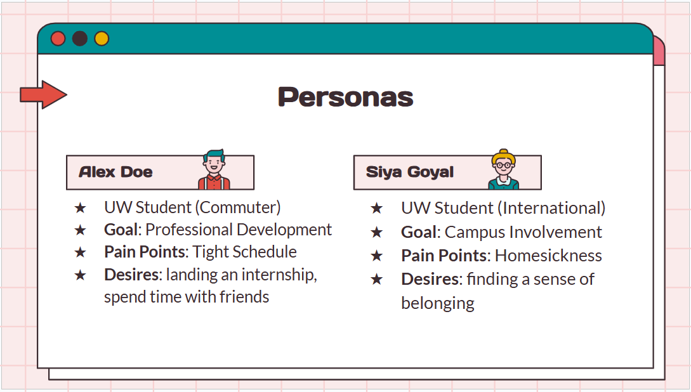
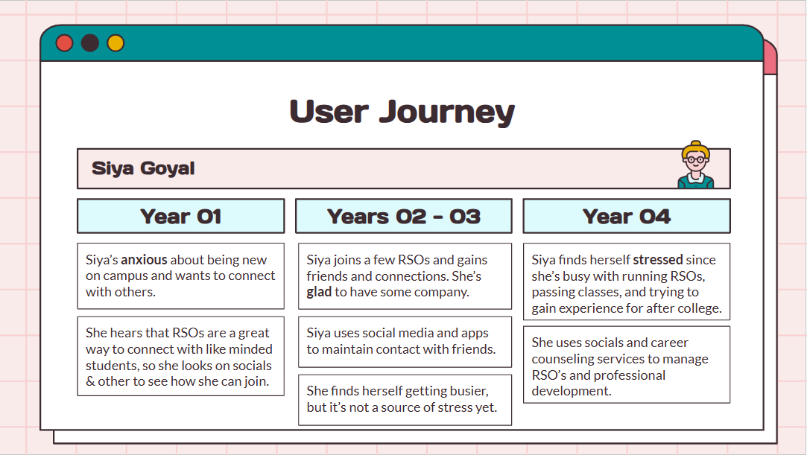
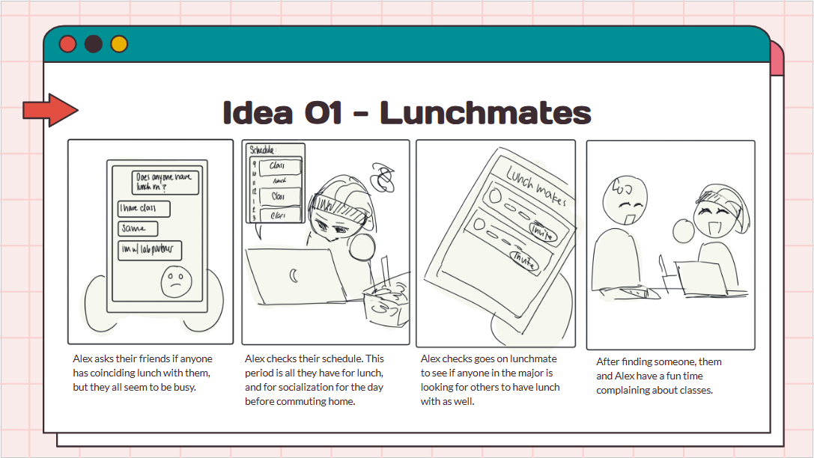

Project Loast
Summary: Conducted user research and ideated potential solutions for helping UW students who are limited on time with finding connections on campus.
This project is a product of an in-class group project, where I took the role of project manager.
> Process Overview
-
Problem Statement
How might we help UW students who are limited on time with finding connections on campus?
-
User Research
Completed a competitor analysis, interviewed UW students and analyzed data through affinity diagramming. Used data to create personas and user journey.
-
Ideation
Brainstormed in a group setting and gathered similar ideas to create 6+ app concepts. Created storyboards for each idea and presented initial concepts to industry professionals.
> Results
  -
External Links
Shown above is a small sample of the design presentation given to industry professionals for insight. See the entirety of our user research paper here. Our final design proposal can be found here .
-
Main Takeaways
I learned what the design process looks like for UI/UX projects, and conducted user interviews for the first time.